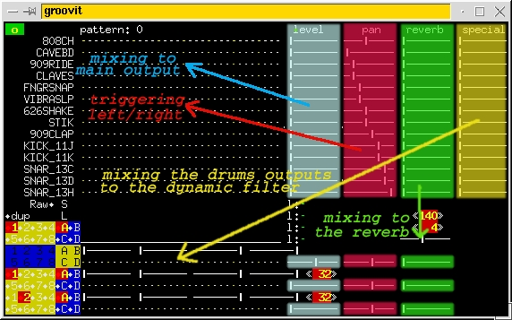

- making accurate and groovy sound/noise.
Mixing voices.
Mixing voices consist in sending them in a certain amount to the
main output
, or to other effects such as the
echo
or the
dynamic filter
.
Here's the scheme of mixing voices with groovit :

Next :
Using groovit's controls.
$Revision: 1.2 $ - last update : $Date: 2003/03/19 16:45:47 $.